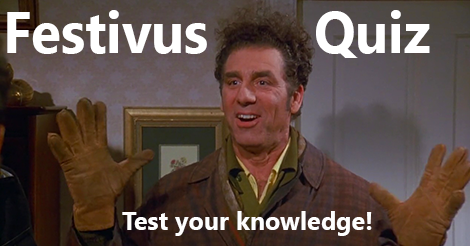

As our holiday season begins, let us take a moment to reflect upon those most sacred of events, whose traditions reflect our values and bring us Joy! Let us all be grateful and celebrate Festivus!
1. Due to the ongoing _____ of Christmas, Frank Costanza created Festivus.
2. The official date of Festivus is:
3. Why did Frank Costanza choose an unadorned aluminum pole as his Festivus icon?
The form below contains four inline radio buttons: